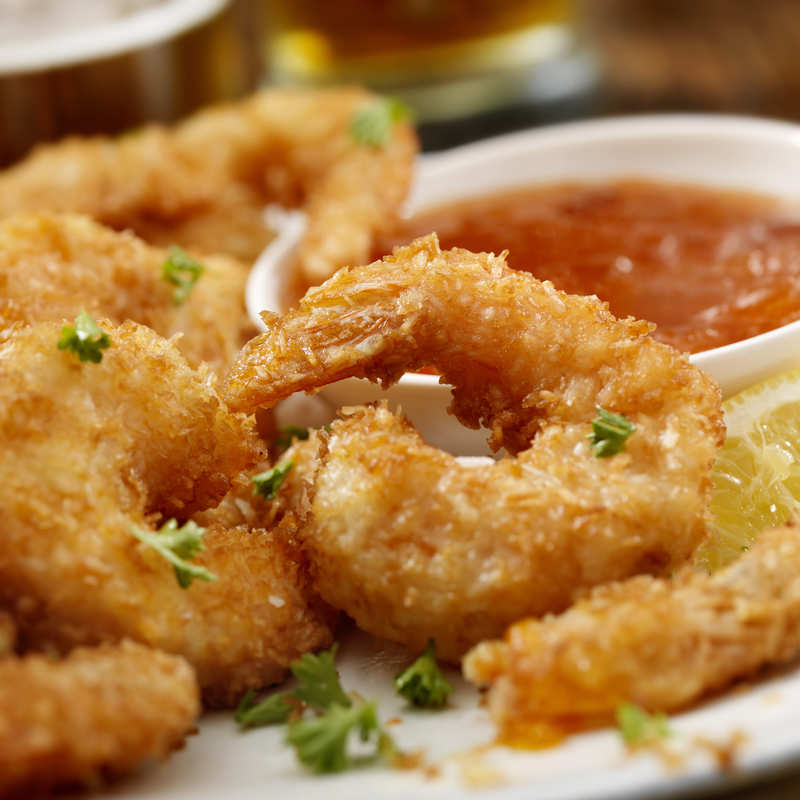
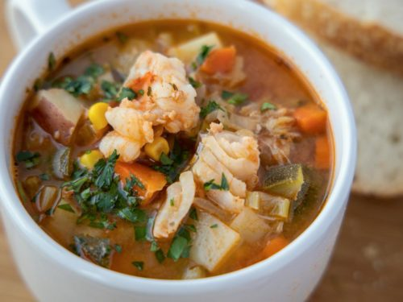
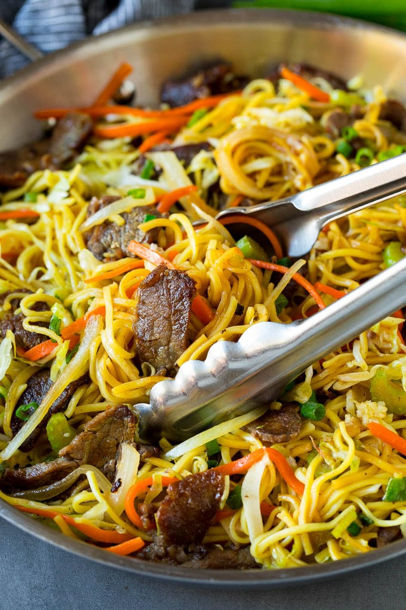

☆ APPETIZERS ☆
- Egg Rolls ................ (2) 1.50 (4) 2.85
- Fried Won Ton (10) .................. 2.60
- Paper Wrapped Chicken (6) ..... 3.99
- B.B.Q. Pork ................................ 5.99
- Golden Fried Shrimp (10) ........ 4.99
- Tempura Vegetables (10) .......... 4.99
- Lucky Star Combo ................... 5.50
- Includes: 2 Egg Rolls, 2 Fried Shirmp,
2 Tempura Vegetables, & 2 Paper Wrapped Chicken.
- Pepper Salt Chicken Wing ....... 6.15

- More Information:
More Information About Fried Shirmp Here!
More Information About Egg Rolls Here!
☆ Soup ☆
- Won Ton Soup ...................... 4.50
- War Won Ton Soup ................ 5.25
- Hot & Sour Soup .............. 5.50
- Vegetable Soup ..................... 5.50
- Seafood Noodle Soup ............. 5.99
- House Noodle Soup ................ 5.99
- Egg Flower Soup .................... 5.25
- Seafood Soup .......................... 6.25

- More Information:
More Information About Won Tons Here!
More Information About Egg Flower Soup Here!
☆ Chow Mein ☆
- Lucky Star Chow Mein .............. 6.15
- (Beef, Chicken, Shrimp)
- Shrimp Chow Mein ...................... 6.15
- Beef Chow Mein .......................... 5.75
- Chicken Chow Mein ................ 5.75
- Pork Chow Mein ...................... 5.75
- Vegetable Chow Mein .............. 5.75
- Cantonese Chow Mein ........... 6.25
- (Hong Kong Style)
- Beef Chow Fun with Soy Sauce ... 6.25
- Fried Rice Vermicelli (Sigapore Style) 6.25

- More Information:
More Information About Chow Mein Here!
☆ Rice ☆
- Lucky Star Fried Rice ............. 5.75
- Shirmp Fried Rice ..................... 5.99
- Beef Fried Rice ................... 5.25
- Chicken Fried Rice ............... 5.25
- B.B.Q. Pork Fried Rice ........... 5.25
- Vegetable Fried Rice ..................5.25
- Steamed Rice ......(SM)1.25(LG)1.75

- More Information:
More Information About Fried Rice Here!